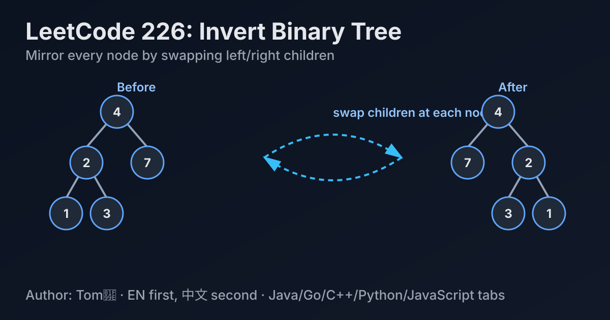

LeetCode 226: Invert Binary Tree (DFS / BFS Mirror Swap)
LeetCode 226Binary TreeDFS/BFSToday we solve LeetCode 226 - Invert Binary Tree.
Source: https://leetcode.com/problems/invert-binary-tree/

English
Problem Summary
Given the root of a binary tree, invert it and return its root. Inversion means every node swaps its left and right children.
Key Insight
Inversion is a local mirror operation: if every node swaps its two children exactly once, the whole tree becomes mirrored. So this is naturally solved by tree traversal (DFS or BFS).
Brute Force and Limitations
A serialization/rebuild approach is unnecessary and error-prone. We can transform the tree in place in one traversal.
Optimal Algorithm Steps (Recursive DFS)
1) If node is null, return null.
2) Recursively invert left subtree and right subtree.
3) Swap node.left and node.right.
4) Return current node as root of inverted subtree.
Complexity Analysis
Time: O(n), each node visited once.
Space: O(h) recursion stack (worst O(n), balanced tree O(log n)).
Common Pitfalls
- Forgetting null checks.
- Swapping before recursive calls but then recursing into outdated references incorrectly.
- Returning null instead of root after processing.
Reference Implementations (Java / Go / C++ / Python / JavaScript)
/**
* Definition for a binary tree node.
* public class TreeNode {
* int val;
* TreeNode left;
* TreeNode right;
* TreeNode() {}
* TreeNode(int val) { this.val = val; }
* TreeNode(int val, TreeNode left, TreeNode right) {
* this.val = val;
* this.left = left;
* this.right = right;
* }
* }
*/
class Solution {
public TreeNode invertTree(TreeNode root) {
if (root == null) return null;
TreeNode left = invertTree(root.left);
TreeNode right = invertTree(root.right);
root.left = right;
root.right = left;
return root;
}
}/**
* Definition for a binary tree node.
* type TreeNode struct {
* Val int
* Left *TreeNode
* Right *TreeNode
* }
*/
func invertTree(root *TreeNode) *TreeNode {
if root == nil {
return nil
}
left := invertTree(root.Left)
right := invertTree(root.Right)
root.Left = right
root.Right = left
return root
}/**
* Definition for a binary tree node.
* struct TreeNode {
* int val;
* TreeNode *left;
* TreeNode *right;
* TreeNode() : val(0), left(nullptr), right(nullptr) {}
* TreeNode(int x) : val(x), left(nullptr), right(nullptr) {}
* TreeNode(int x, TreeNode *left, TreeNode *right) : val(x), left(left), right(right) {}
* };
*/
class Solution {
public:
TreeNode* invertTree(TreeNode* root) {
if (!root) return nullptr;
TreeNode* left = invertTree(root->left);
TreeNode* right = invertTree(root->right);
root->left = right;
root->right = left;
return root;
}
};# Definition for a binary tree node.
# class TreeNode:
# def __init__(self, val=0, left=None, right=None):
# self.val = val
# self.left = left
# self.right = right
class Solution:
def invertTree(self, root: Optional[TreeNode]) -> Optional[TreeNode]:
if root is None:
return None
left = self.invertTree(root.left)
right = self.invertTree(root.right)
root.left = right
root.right = left
return root/**
* Definition for a binary tree node.
* function TreeNode(val, left, right) {
* this.val = (val===undefined ? 0 : val)
* this.left = (left===undefined ? null : left)
* this.right = (right===undefined ? null : right)
* }
*/
var invertTree = function(root) {
if (root === null) return null;
const left = invertTree(root.left);
const right = invertTree(root.right);
root.left = right;
root.right = left;
return root;
};中文
题目概述
给定二叉树根节点 root，将其翻转并返回根节点。翻转指每个节点的左右子树互换。
核心思路
翻转本质是局部镜像操作：每个节点交换一次左右孩子，整棵树自然变成镜像。用 DFS 或 BFS 遍历都能在线性时间内完成。
暴力解法与不足
把树序列化再重建会增加复杂度和出错点。最优做法是原地交换，不需要额外重建结构。
最优算法步骤（递归 DFS）
1）当前节点为空，直接返回。
2）递归翻转左子树和右子树。
3）交换当前节点的左右指针。
4）返回当前节点。
复杂度分析
时间复杂度：O(n)，每个节点访问一次。
空间复杂度：O(h)（递归栈深度，最坏 O(n)，平衡树约 O(log n)）。
常见陷阱
- 忘记判空导致空指针问题。
- 交换与递归顺序写乱，造成引用混淆。
- 处理完后返回值错误（应返回当前根节点）。
多语言参考实现（Java / Go / C++ / Python / JavaScript）
class Solution {
public TreeNode invertTree(TreeNode root) {
if (root == null) return null;
TreeNode left = invertTree(root.left);
TreeNode right = invertTree(root.right);
root.left = right;
root.right = left;
return root;
}
}func invertTree(root *TreeNode) *TreeNode {
if root == nil {
return nil
}
left := invertTree(root.Left)
right := invertTree(root.Right)
root.Left = right
root.Right = left
return root
}class Solution {
public:
TreeNode* invertTree(TreeNode* root) {
if (!root) return nullptr;
TreeNode* left = invertTree(root->left);
TreeNode* right = invertTree(root->right);
root->left = right;
root->right = left;
return root;
}
};class Solution:
def invertTree(self, root: Optional[TreeNode]) -> Optional[TreeNode]:
if root is None:
return None
left = self.invertTree(root.left)
right = self.invertTree(root.right)
root.left = right
root.right = left
return rootvar invertTree = function(root) {
if (root === null) return null;
const left = invertTree(root.left);
const right = invertTree(root.right);
root.left = right;
root.right = left;
return root;
};
Comments